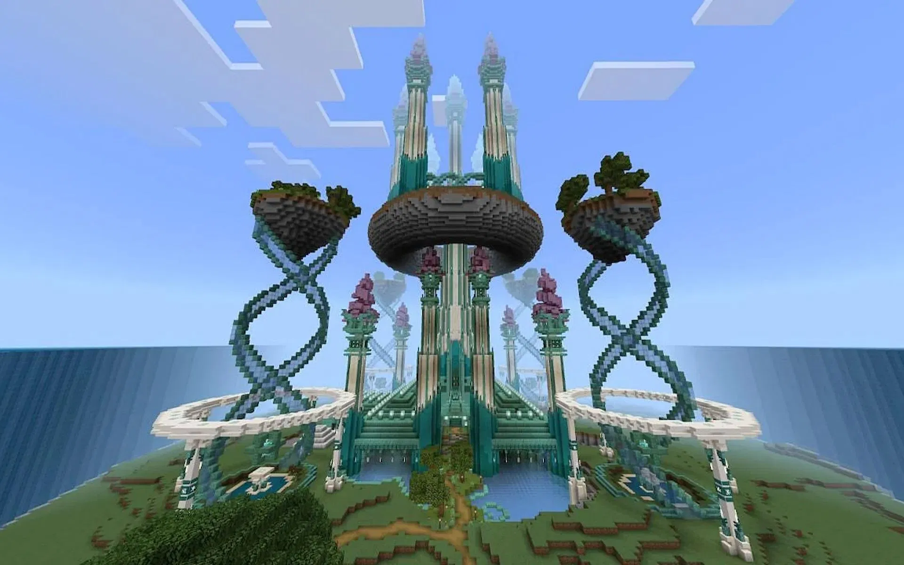
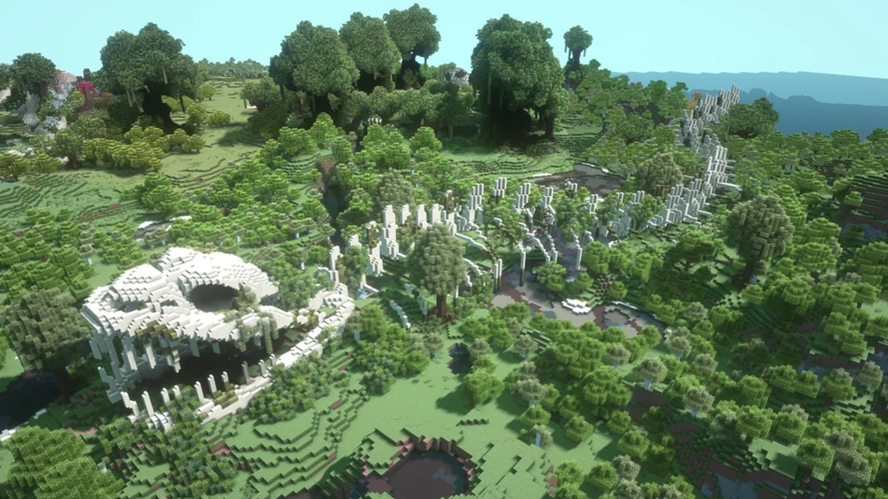
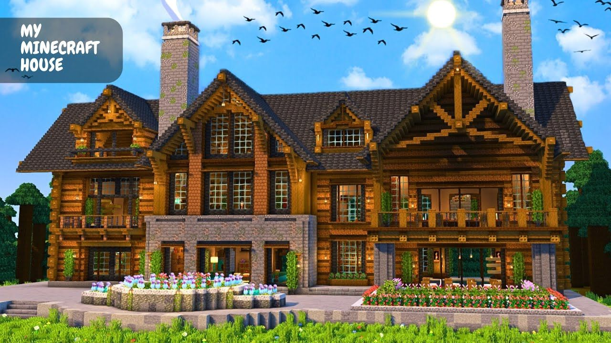
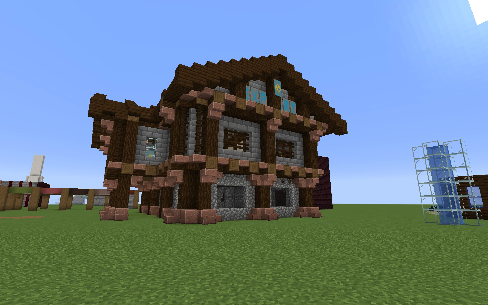
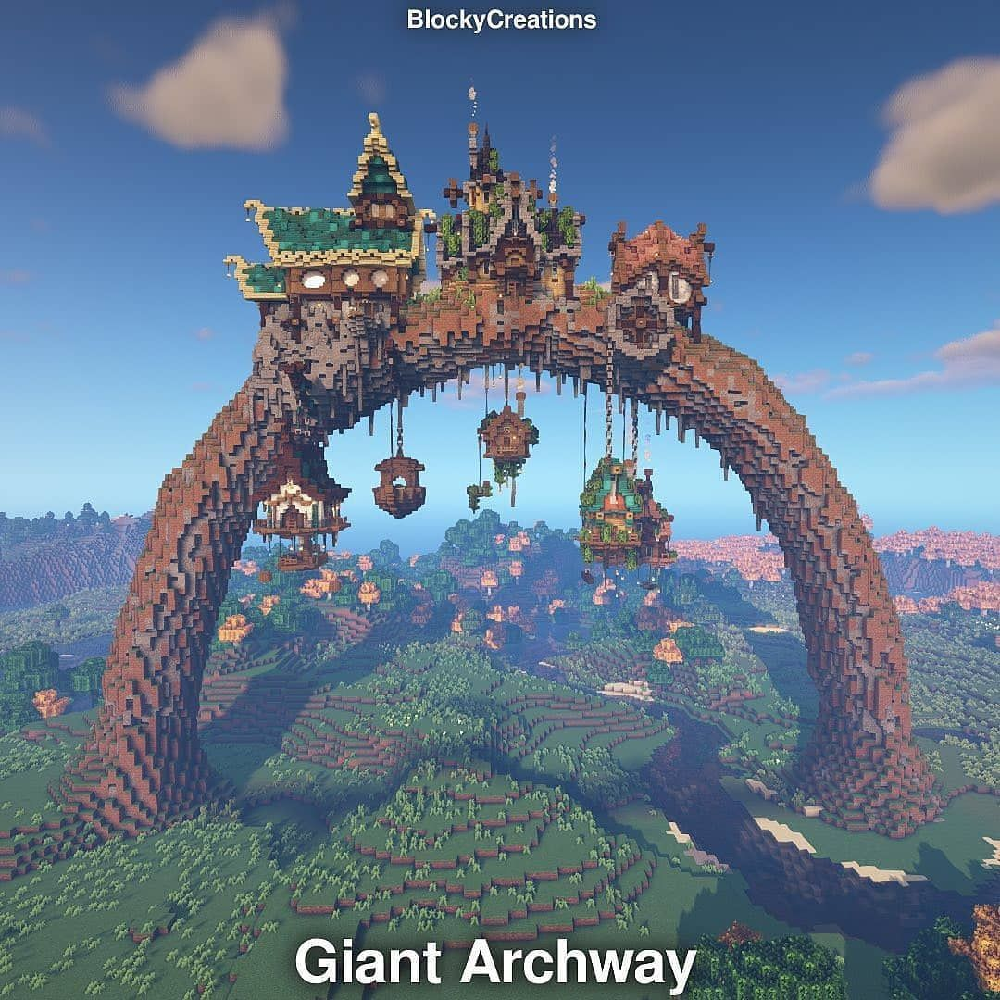

Statytojai
Statytojai Minecraft žaidime yra viena kūrybiškiausių ir kantriausių žaidėjų grupių. Jie didžiausią dėmesį skiria ne kovai ar išgyvenimui, o pasaulio formavimui pagal savo vaizduotę. Dažniausiai jie laiką leidžia „Creative“ režime, kuris leidžia laisvai naudoti visus blokus ir skraidyti, todėl kūrybos procesas tampa greitesnis ir patogesnis. Tokie žaidėjai dažnai praleidžia valandų valandas planuodami ir kruopščiai dėliodami blokus, kad sukurtų įspūdingus statinius – nuo paprastų namų iki milžiniškų pilių, modernių miestų ar net realių pastatų kopijų.



Bendradarbiavimas

Be to, statytojai dažnai bendradarbiauja su kitais žaidėjais. Jie gali kartu kurti didelius projektus, tokius kaip miestai ar teminiai parkai, pasidalindami darbais ir idėjomis. Tokia veikla ne tik lavina kūrybiškumą, bet ir skatina komandinį darbą bei bendravimą. Verta paminėti ir tai, jog nemažai talentingų statytojų dirba architektais ar dizaineriais. Jie reikalingi ir serveriams, kurie nori turėti gražių pastatų, gražią atsiradimo vietą ir dauk ko kito. Dėl to statytojai užima svarbią vietą Minecraft bendruomenėje, nes jų sukurti pasauliai dažnai įkvepia kitus žaidėjus kurti ir tobulėti.
